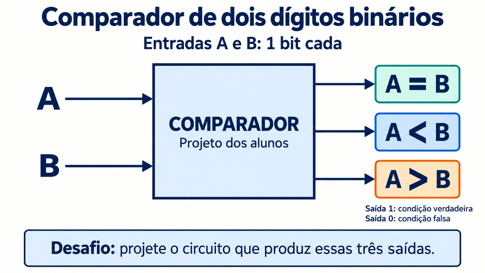
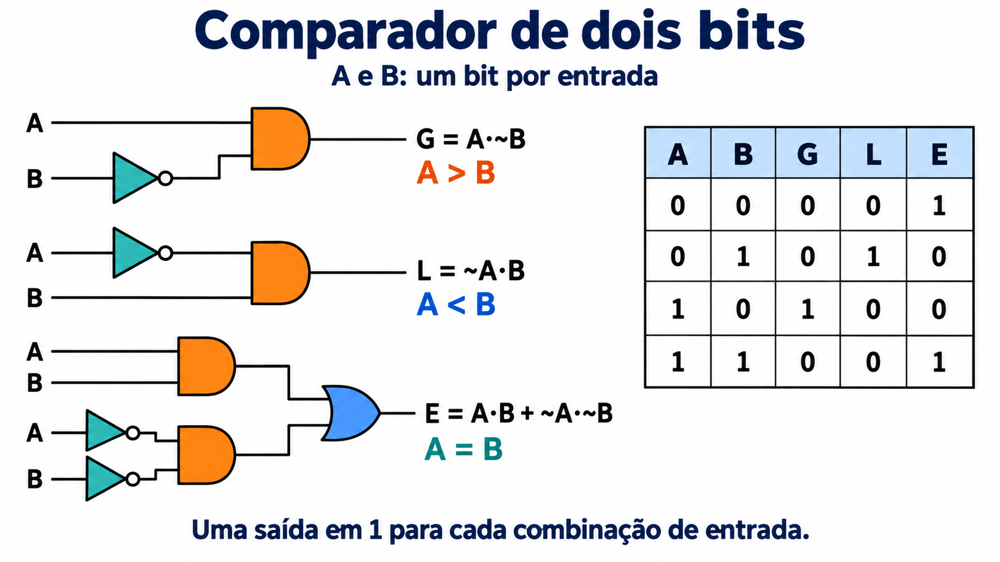
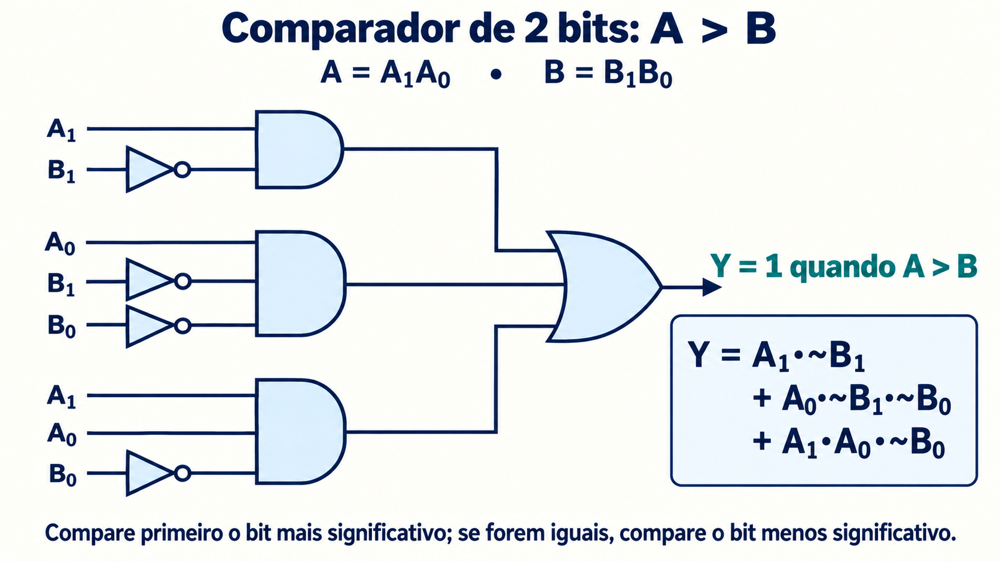
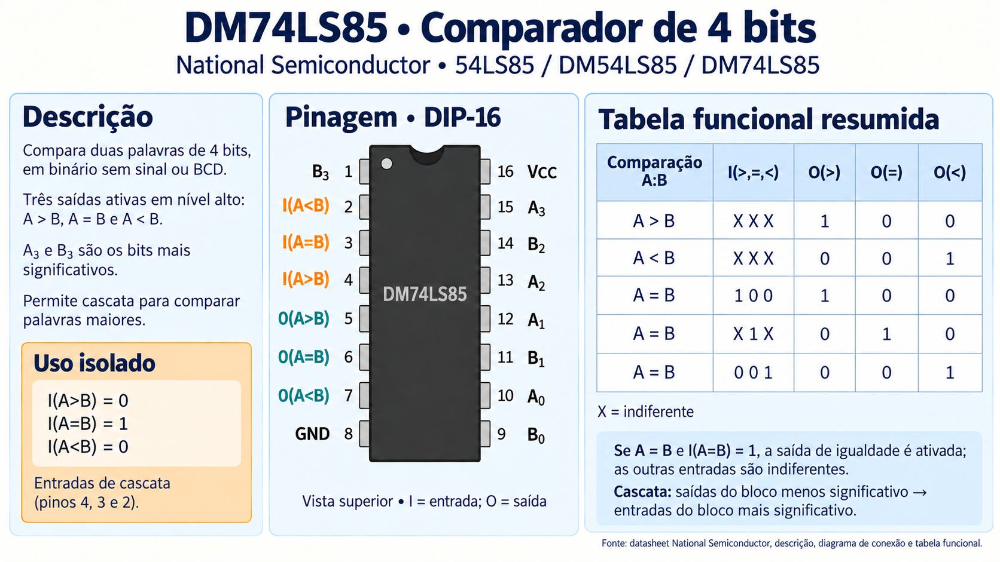

5.1 / Comparação de dois bits: A e B
Comparação de dois bits: A e B
Um comparador de magnitude é um circuito combinacional que indica a relação entre dois valores. Começamos com dois bits no total: A e B, um bit por operando. Na próxima seção, cada operando terá dois bits.
As saídas são ativas em 1: G indica A > B; L indica A < B; E indica A = B. Para cada combinação estável de entradas, exatamente uma dessas três relações é verdadeira.

| A | B | G: A > B | L: A < B | E: A = B |
|---|---|---|---|---|
| 0 | 0 | 0 | 0 | 1 |
| 0 | 1 | 0 | 1 | 0 |
| 1 | 0 | 1 | 0 | 0 |
| 1 | 1 | 0 | 0 | 1 |
Expressões booleanas
L = ~A·B
E = A·B + ~A·~B
G vale 1 apenas quando A = 1 e B = 0; L vale 1 apenas no caso contrário. E vale 1 quando ambos são 0 ou ambos são 1. O símbolo ~ indica NOT, · indica AND e + indica OR.
Circuito com portas AND, OR e NOT
As saídas G e L usam uma AND cada, com uma entrada negada. Para E, duas AND reconhecem os casos 11 e 00, e uma OR combina esses casos. A repetição dos rótulos A e B na figura representa os mesmos sinais.

5.2 / Comparação de dois números de 2 bits
Comparação de dois números de 2 bits
Agora, A = A1A0 e B = B1B0 são palavras binárias sem sinal, com valores de 0 a 3. Existem quatro entradas físicas, portanto a tabela verdade contém 24 = 16 combinações.
Primeiro comparamos A1 e B1, os bits mais significativos. Se forem diferentes, eles determinam a relação. Se forem iguais, a decisão depende de A0 e B0. Por exemplo, 102 > 012, mesmo que o bit menos significativo de A seja menor.
Tabela verdade completa
| A₁ | A₀ | B₁ | B₀ | G: A > B | L: A < B | E: A = B |
|---|---|---|---|---|---|---|
| 0 | 0 | 0 | 0 | 0 | 0 | 1 |
| 0 | 0 | 0 | 1 | 0 | 1 | 0 |
| 0 | 0 | 1 | 0 | 0 | 1 | 0 |
| 0 | 0 | 1 | 1 | 0 | 1 | 0 |
| 0 | 1 | 0 | 0 | 1 | 0 | 0 |
| 0 | 1 | 0 | 1 | 0 | 0 | 1 |
| 0 | 1 | 1 | 0 | 0 | 1 | 0 |
| 0 | 1 | 1 | 1 | 0 | 1 | 0 |
| 1 | 0 | 0 | 0 | 1 | 0 | 0 |
| 1 | 0 | 0 | 1 | 1 | 0 | 0 |
| 1 | 0 | 1 | 0 | 0 | 0 | 1 |
| 1 | 0 | 1 | 1 | 0 | 1 | 0 |
| 1 | 1 | 0 | 0 | 1 | 0 | 0 |
| 1 | 1 | 0 | 1 | 1 | 0 | 0 |
| 1 | 1 | 1 | 0 | 1 | 0 | 0 |
| 1 | 1 | 1 | 1 | 0 | 0 | 1 |
Mapas de Karnaugh
Em cada mapa, as linhas são A1A0 e as colunas são B1B0. Ambas seguem a ordem Gray 00, 01, 11, 10. Células nas bordas opostas também são adjacentes. Todas as entradas são válidas, portanto não há condições don't care.
G: A > B
| A₁A₀ ↓ / B₁B₀ → | 00 | 01 | 11 | 10 |
|---|---|---|---|---|
| 00 | 0 | 0 | 0 | 0 |
| 01 | 1 | 0 | 0 | 0 |
| 11 | 1 | 1 | 0 | 1 |
| 10 | 1 | 1 | 0 | 0 |
L: A < B
| A₁A₀ ↓ / B₁B₀ → | 00 | 01 | 11 | 10 |
|---|---|---|---|---|
| 00 | 0 | 1 | 1 | 1 |
| 01 | 0 | 0 | 1 | 1 |
| 11 | 0 | 0 | 0 | 0 |
| 10 | 0 | 0 | 1 | 0 |
E: A = B
| A₁A₀ ↓ / B₁B₀ → | 00 | 01 | 11 | 10 |
|---|---|---|---|---|
| 00 | 1 | 0 | 0 | 0 |
| 01 | 0 | 1 | 0 | 0 |
| 11 | 0 | 0 | 1 | 0 |
| 10 | 0 | 0 | 0 | 1 |
Agrupamentos e expressões mínimas
Saída G: um grupo de quatro células ocupa as linhas 11 e 10 nas colunas 00 e 01. Um par ocupa as linhas 01 e 11 na coluna 00. Outro par ocupa a linha 11 nas colunas 00 e 10, unidas pela borda. Eles produzem, respectivamente:
Saída L: o grupo de quatro ocupa as linhas 00 e 01 nas colunas 11 e 10. Um par ocupa a linha 00 nas colunas 01 e 11. Outro ocupa as linhas 00 e 10 na coluna 11, unidas pela borda:
Saída E: as quatro células em 1 estão isoladas; células na diagonal não são adjacentes. A soma de produtos contém quatro mintermos:
+ A₁·~A₀·B₁·~B₀ + A₁·A₀·B₁·B₀
Uma forma fatorada mais conveniente compara cada par de bits e exige igualdade nos dois pares:
Implementação do circuito
A figura dos slides implementa G: cada termo da expressão corresponde a uma porta AND; uma OR combina os três termos. As portas NOT fornecem os bits negados. Entradas com o mesmo rótulo recebem o mesmo sinal.

Para construir L, repetimos a estrutura de três AND e uma OR com os termos da expressão de L. Para E, duas redes AND–OR comparam os pares (A1, B1) e (A0, B0); suas saídas entram em uma AND final. Assim, as três saídas podem ser implementadas usando somente AND, OR e NOT.
5.3 / CI 7485: comparador de magnitude de 4 bits
CI 7485: comparador de magnitude de 4 bits
O 7485 reúne a comparação de duas palavras de quatro bits e sinais para expansão em cascata. A referência dos slides é o DM74LS85 da National Semiconductor. A e B podem representar valores binários sem sinal de 0 a 15 ou dígitos BCD válidos de 0 a 9. Não há validação de código BCD: entradas de 1010 a 1111 continuam sendo comparadas como valores binários.

Entradas e saídas
A3 e B3 são os bits mais significativos. As saídas O(>), O(=) e O(<) indicam a relação encontrada, em nível alto. As entradas I(>), I(=) e I(<) recebem o resultado de um estágio que compara bits menos significativos; elas não são bits adicionais dos operandos.
| Grupo | Sinais e pinos (DIP-16) |
|---|---|
| Operando A | A₃: 15 · A₂: 13 · A₁: 12 · A₀: 10 |
| Operando B | B₃: 1 · B₂: 14 · B₁: 11 · B₀: 9 |
| Entradas de cascata | I(>): 4 · I(=): 3 · I(<): 2 |
| Saídas | O(>): 5 · O(=): 6 · O(<): 7 |
| Alimentação | VCC: 16 · GND: 8; 5 V nominais para DM74LS85 |
Uso isolado
Para comparar apenas duas palavras de quatro bits, ligue I(>) = 0, I(=) = 1 e I(<) = 0. Essa configuração informa que não há diferença em posições inferiores. Com ela, exatamente uma saída fica ativa para cada par de operandos.
Como os sinais de cascata afetam o resultado
Quando A e B diferem nos quatro bits locais, a relação local prevalece e as entradas de cascata são indiferentes. Quando as palavras locais são iguais, as entradas de cascata determinam o resultado conforme a tabela funcional.
| Comparação local | I(>) | I(=) | I(<) | O(>) | O(=) | O(<) |
|---|---|---|---|---|---|---|
| A > B | X | X | X | 1 | 0 | 0 |
| A < B | X | X | X | 0 | 0 | 1 |
| A = B | 1 | 0 | 0 | 1 | 0 | 0 |
| A = B | X | 1 | X | 0 | 1 | 0 |
| A = B | 0 | 0 | 1 | 0 | 0 | 1 |
| A = B | 1 | 0 | 1 | 0 | 0 | 0 |
| A = B | 0 | 0 | 0 | 1 | 0 | 1 |
X = 0 ou 1: o valor dessa entrada não altera as saídas na linha indicada. Na ordem I(>), I(=), I(<), a condição de igualdade é X1X, não 1XX. Assim, se A = B e as três entradas de cascata forem 1, O(=) será 1 e as outras saídas serão 0.
As duas últimas linhas completam os casos omitidos no resumo visual: com I(=) = 0, entradas de cascata 101 desativam todas as saídas, enquanto 000 ativa simultaneamente O(>) e O(<). Essas combinações não representam um resultado normal de comparação. A regra de uma única saída ativa pressupõe a configuração de uso isolado ou uma cascata corretamente inicializada.
Cascateamento para palavras maiores
- Um primeiro CI compara os quatro bits menos significativos. Inicialize suas entradas de cascata com 0, 1 e 0 na ordem >, =, <.
- Conecte O(>), O(=) e O(<) desse CI às entradas correspondentes do CI dos quatro bits mais significativos.
- Leia o resultado nas saídas do CI mais significativo.
Se a parte mais significativa diferir, ela determina o resultado. Se for igual, o resultado da parte menos significativa decide. A mesma estrutura pode ser repetida para palavras maiores.
Referências
Material de apoio
- National Semiconductor — DM74LS85, descrição, pinagem e tabela funcional.
- DM74LS85 — folha de dados Fairchild, tabela funcional.
- Bibliografia da disciplina: Floyd, Sistemas Digitais: Fundamentos e Aplicações.